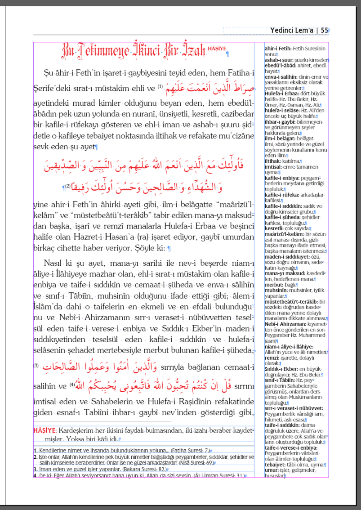

I need to write an InDesign Script
in English:
There are 19 full size books ~6000 page in total, and 23 small size books in InDesign. Below you see the screen picture of one page as a sample. This is "Risale-i Nur", the Collection of Bediüzzaman Said Nursi (1878-1960). These books are modern/contemporary explanation and commentary of Kuran.
Türkçe:
Bu kitaplar kolleksiyonu, Bediüzzaman Said Nursi'nin (1878-1960) meşhur Risale-i Nur Külliyatıdır.Normal sayfa boyu ile 6000 sayfa olarak bilinir. Şu anda bizde olanı 19 adet büyük boy ve 23 adet küçük boy kitaptır. Şu anda bizde olan 19 adet büyük boy 6,000 sayfadan fazla gelmesi normal, çünkü bakın her sayfanın kenar sütununda bir de derkenar sözlük var, yani o sayfada geçen kelimelerin sözlüğü var. Bu külliyatı onlarca senedir Türkiye'de sayısını bilmediğim sayıda çok yayınevi basmaktadır.
A sample book Lem'alar, as an InDesign file:
Örnek kitap olarak, Lem'alar kitabı, InDesign formatında:

in English:
We need a script to export each page of the each book into a single txt file in txt format. For example, if a book contains 900 page, we need to have 900 seperate .txt files one for each page.
("Hâşiye" means "footnote"!)
The below, you see the .txt file content of the sample book page above.
Please be careful, text file has 4 parts in order, because, this spsific page has 4 parts in order.
Türkçe:
Yapılacak iş ve script: Bu yukarıdaki InDesign sayfası, aşağıadaki metin dosyasına çevrilecek. Kitapta bulunan her bir sayfa için bir adet metin dosyası olacak.
(Hâşiye, dipnot demektir)
Lütfen dikkat: üretilmiş metin dosyası sıralı 4 bölümden oluşuyor, çünkü orjinal sayfa da 4 bölümden oluşuyor.
---0---(1. Part)
Bu Tetimmeye İkinci Bir İzah HÂŞİYE
Şu âhir-i Feth’in işaret-i gaybiyesini teyid eden, hem Fatiha-i Şerife’deki sırat-ı müstakim ehli ve صِرَاطَ الَّذ۪ينَ اَنْعَمْتَ عَلَيْهِمْ
ayetindeki murad kimler olduğunu beyan eden, hem ebedü'l-âbâdın pek uzun yolunda en nuranî, ünsiyetli, kesretli, cazibedar bir kafile-i rüfekayı gösteren ve ehl-i iman ve ashab-ı şuuru şiddetle o kafileye tebaiyet noktasında iltihak ve refakate mu’cizâne sevk eden şu ayet
فَاُولٰٓئِكَ مَعَ الَّذ۪ينَ اَنْعَمَ اللّٰهُ عَلَيْهِمْ مِنَ النَّبِيّ۪ينَ وَ الصِّدّ۪يق۪ينَ وَ الشُّهَدَٓاءِ وَ الصَّالِح۪ينَ وَحَسُنَ اُولٰٓئِكَ رَف۪يقًا
yine ahir-i Feth’in âhirki ayeti gibi, ilm-i belâgatte “maârîzü’l-kelâm” ve “müstetbeâtü’t-terâkîb” tabir edilen mana-yı maksuddan başka, işarî ve remzî manalarla Hulefa-i Erbaa ve beşinci halife olan Hazret-i Hasan’a (ra) işaret ediyor, gaybî umurdan birkaç cihette haber veriyor. Şöyle ki:
Nasıl ki şu ayet, mana-yı sarihi ile nev-i beşerde niam-ı âliye-i İlâhiyeye mazhar olan, ehl-i sırat-ı müstakim olan kafile-i enbiya ve taife-i sıddıkîn ve cemaat-i şüheda ve enva-ı sâlihîn ve sınıf-ı Tâbiîn, muhsinîn olduğunu ifade ettiği gibi; âlem-i İslâm’da dahi o taifelerin en ekmeli ve en efdali bulunduğunu ve Nebî-i Ahirzamanın sırr-ı veraset-i nübüvvetten teselsül eden taife-i verese-i enbiya ve Sıddık-ı Ekber’in maden-i sıddıkıyetinden teselsül eden kafile-i sıddıkîn ve hulefa-i selâsenin şehadet mertebesiyle merbut bulunan kafile-i şüheda,
وَالَّذ۪ينَ اٰمَنُوا وَعَمِلُوا الصَّالِحَاتِ sırrıyla bağlanan cemaat-i salihîn ve قُلْ اِنْ كُنْتُمْ تُحِبُّونَ اللّٰهَ فَاتَّبِعُون۪ى يُحْبِبْكُمُ اللّٰهُ sırrını imtisal eden ve Sahabelerin ve Hulefa-i Raşidînin refakatinde giden esnaf-ı Tabiîni ihbar-ı gaybî nev’inden gösterdiği gibi,
---0--- (2. Part)
HÂŞİYE: Kardeşlerim her ikisini faydalı bulmasından, iki izahı beraber kaydetmişler. Yoksa biri kâfi idi.
---0--- (3. Part)
1. Kendilerine nimet ve ihsanda bulunduklarının yoluna... (Fatiha Suresi: 7.)
2. İşte onlar, Allah’ın kendilerine pek büyük nimetler bağışladığı peygamberler, sıddıklar, şehidler ve salih kimselerle beraberdirler. Onlar ise ne güzel arkadaşlardır! (Nisâ Suresi: 69.)
3. İman eden ve güzel işler yapanlar. (Bakara Suresi: 82.)
4. De ki: Eğer Allah’ı seviyorsanız bana uyun ki, Allah da sizi sevsin. (Âl-i İmran Suresi: 31.)
---0--- (4. Part)
ahir-i Fetih: Fetih Suresinin sonu.
ashab-ı şuur: şuurlu kimseler.
ebedü'l-âbâd: ahiret, ebedî hayat.
enva-i salihîn: dinin emir ve yasaklarını eksiksiz olarak yerine getirenler.
Hulefa-i Erbaa: dört büyük halife: Hz. Ebu Bekir, Hz. Ömer, Hz. Osman, Hz. Ali.
hulefa-i selâse: Hz. Ali’den önceki üç büyük halife.
ihbar-ı gaybî: bilinmeyen ve görünmeyen şeyler hakkında gelen.
ilm-i belâgat: belâgat ilmi, sözü yerinde ve güzel söylemenin kurallarını konu eden ilim.
iltihak: katılma.
imtisal: emre tamamen uyma.
kafile-i enbiya: peygamberlerin meydana getirdiği topluluk.
kafile-i rüfeka: arkadaşlar kafilesi.
kafile-i sıddıkîn: sadık ve doğru kimseler grubu.
kafile-i şüheda: şehidler kafilesi, topluluğu.
kesretli: çok sayıda.
maârîzü’l-kelâm: bir sözün asıl manası dışında, gizli başka manayı ifade etmesi, başka manaların istenmesi.
maden-i sıddıkıyet: özü, sözü doğru olmanın, sadakatin kaynağı.
mana-yı maksud: kasdedilen, hedeflenen mana.
merbut: bağlı.
muhsinîn: muhsinler, iyilik yapanlar.
müstetbeâtü’t-terâkîb: bir sözdeki doğrudan kasdedilen mana yerine dolaylı manaların dikkate alınması.
Nebî-i Ahirzaman: kıyametten önce gönderilen en son Peygamber Hz. Muhammed (asm)
niam-ı âliye-i İlâhiye: Allah’ın yüce ve âli nimetleri.
remzî: işaretle, dolaylı olarak.
Sıddık-ı Ekber: en büyük doğrulayıcı; Hz. Ebu Bekir.
sınıf-ı Tâbiîn: Hz. peygamberin Sahabeleriyle görüşmüş, onlardan ders almış olan Müslümanların topluluğu.
sırr-ı veraset-i nübüvvet: Peygamberlik vârisliği sırrı, hikmeti, aslı esası.
taife-i sıddıkîn: daima doğruluk üzere, Allah’a ve peygambere çok sadık olanların oluşturduğu topluluk.
taife-i verese-i enbiya: Peygamberlerin vârisleri olan âlimler topluluğu.
tebaiyet: tâbi olma, uyma.
umur: işler, gelişmeler, hususlar.
---0---